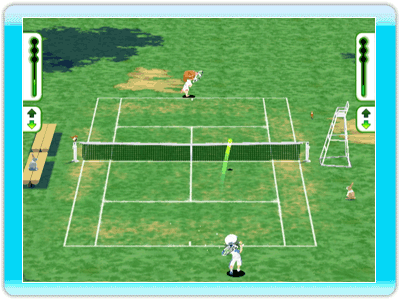

5 |
Controles |
 |
Cómo usar los controles en Family Tennis.
Mueve el puntero usando el puntero del Wii Remote. ●Botón A Pulsa el Botón A para confirmar. ●Botón B Pulsa el Botón B para volver a la pantalla anterior.
 ●Balancea el Wii Remote Dale a la bola balanceando el Wii Remote. Derecha a izquierda = mover Izquierda a derecha = revés Arriba abajo = remate Abajo arriba = globo Cuando tu oponente lance la bola alta, tu personaje se preparará para rematarla. Si balanceas el Wii Remote en el momento justo, rematarás la bola hacia tu oponente. ●Botón A Manteniendo pulsado el Botón A y balanceando el Wii Remote, puedes soltar un Superremate. También puedes usar esta técnica cuando vayas a sacar. ●Cruz de control Pulsa arriba en la cruz de control para que tu personaje avance, y abajo para que retroceda. En el tiempo que pasa desde que le das a la bola hasta que el oponente la devuelve, puedes pulsar izquierda o derecha en la dirección que crees que tu oponente lanzará la bola. Si la aciertas, tu personaje estará colocado más rápido de lo normal, pero si fallas, tardarás más en llegar a la bola. ●Botón - Muestra el menú de pausa.
 ●Resume Salir del menú de pausa y volver al juego. ●Back to Title Salir del juego y volver al menú inicial. ●Third Person view Ver toda la pista desde arriba. Si hay varios jugadores, esta será la única vista disponible. ●First Person view Si hay una sola persona jugando, esta opción estará disponible. Parecerá como si fueras el personaje, lo que hará el juego más realista. |
 |
 |
 |